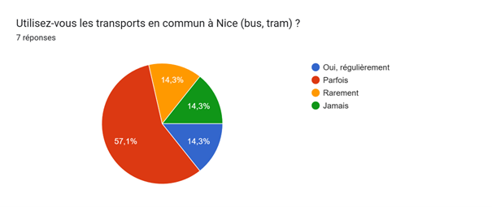
Q3. Si vous utilisez peu ou jamais les transports, pourquoi ?
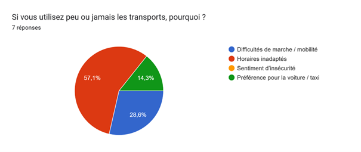
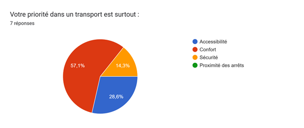
Q5. Les arrêts de tram et bus sont-ils accessibles pour vous ?
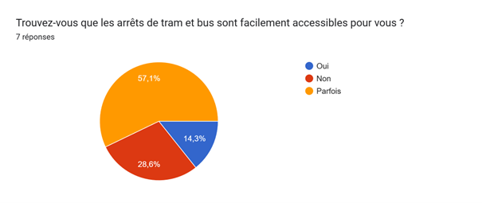
Q6. Les trottoirs de votre quartier sont :
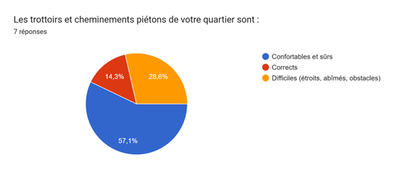
Q7. Seriez-vous favorable à des navettes électriques de quartier ?
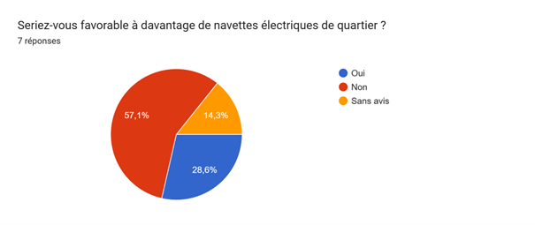
Q8. Distance jusqu’à l’arrêt le plus proche :
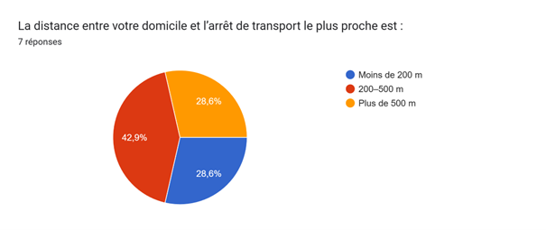
Q9. Les informations sur les transports sont :
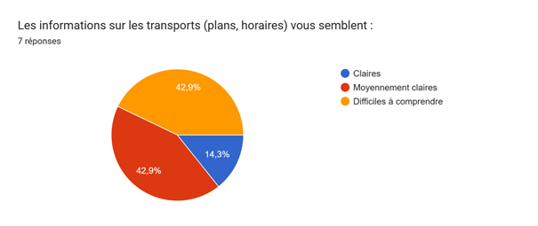
Q10. Les transports non polluants sont-ils importants pour votre qualité de vie ?
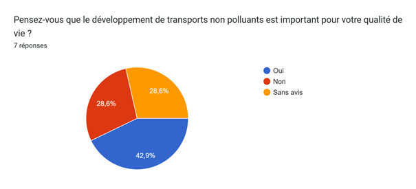
Q11. Utiliseriez-vous un service adapté aux personnes à mobilité réduite ?
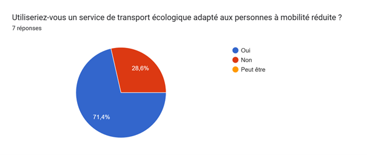
Q12. Quel transport non polluant vous convient le mieux ?
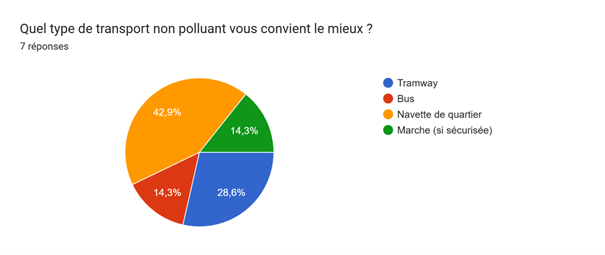
Q13. Favorable à une réduction senior ?
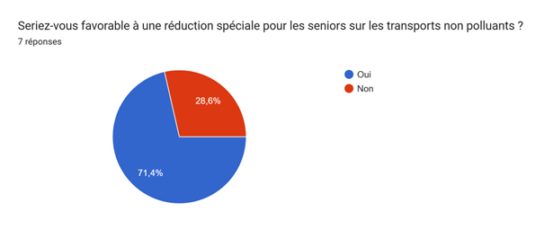
Q14. Le bruit de la circulation vous gêne-t-il ?
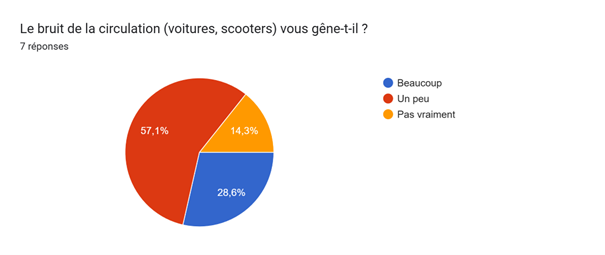
Q15. Plus de zones piétonnes calmes à Nice ?
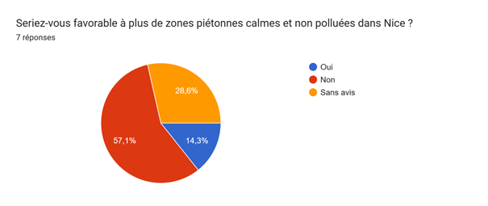
Q16. Nice prend-elle en compte les besoins des seniors ?
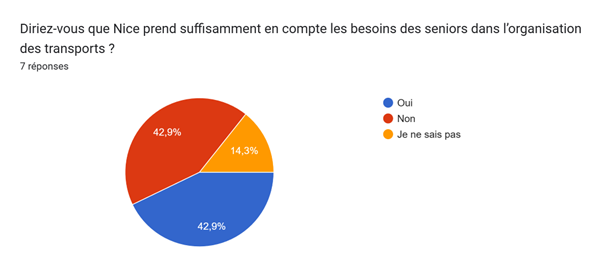